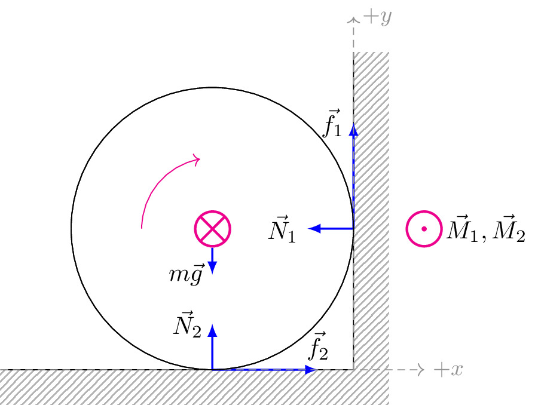

pre.tex
\documentclass[tikz]{standalone}\input{pre.tex}\begin{document}\begin{tikzpicture}
\draw[interface] (-2,0) rectangle ++ (5,-0.5);
\draw[] (-2,0) -- ++(5,0);
\draw[interface] (3,-0.5) rectangle ++ (0.5,5);
\draw[] (3,0) -- ++(0,4.5);
\draw[] (1,2) coordinate (o) circle (2) node[magenta, scale=1.5] {$\bigotimes$};
\draw (o) pic[<-, magenta,]{carc=100:180:1cm};
\coordinate (1) at (3,2);
\coordinate (2) at (1,0);
\draw[force, thick, ->] (1) -- ++ (0,1.5) node[left] {$\vec{f}_1$};
\draw[force, thick, ->] (2) -- ++ (1.5,0) node[above] {$\vec{f}_2$};
\draw[force, thick, ->] (o) -- ++ (0,-0.65) node[left] {$m\vec{g}$};
\draw[force, thick, ->] (2) -- ++ (0,0.65) node[left] {$\vec{N}_2$};
\draw[force, thick, ->] (1) -- ++ (-0.65,0) node[left] {$\vec{N}_1$};
\draw[axis,->] (-2,0) -- ++ (6,0) node[right] {$+x$};
\draw[axis,->] (3,0) -- ++ (0,5) node[right] {$+y$};
\draw[fill=white, draw=none] (1,2) coordinate (o) circle (2.7mm);
\draw[] (1,2) coordinate (o) circle (2) node[magenta, scale=1.5] {$\bigotimes$};
\draw[] (4,2) node[magenta, scale=1.5] {$\bigodot$} node[right, xshift=0.5em] {$\vec{M}_1, \vec{M}_2$};
\end{tikzpicture}\end{document}